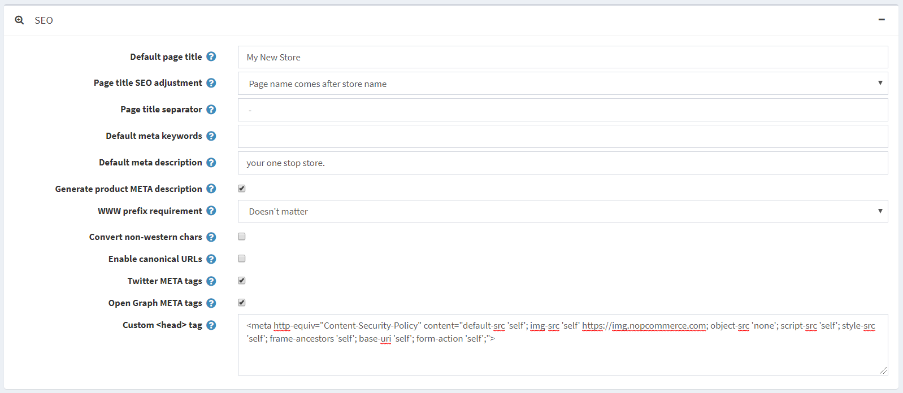

Content Security Policy (CSP) Headers
Content-Security-Policy is the name of an HTTP response header that modern browsers use to enhance the security of the document (or web page). The HTTP Content Security Policy response header gives website admins a sense of control by giving them the authority to restrict the resources such as JavaScript and CSS a user is allowed to load within the site. In other words, you can whitelist your site's content sources. Although it is primarily used as an HTTP response header, you can also apply it via a meta tag.
<meta http-equiv="Content-Security-Policy" content="default-src 'self'; img-src 'self' https://img.nopcommerce.com; object-src 'none'; script-src 'self'; style-src 'self'; frame-ancestors 'self'; base-uri 'self'; form-action 'self';">
To add this custom meta tag, you can go to www.yourStore.com/Admin/Setting/GeneralCommon and find Custom <head> tag and add this as shown in the image below.

Content Security Policy protects against Cross Site Scripting (XSS) and other forms of attacks such as ClickJacking. Although it doesn't eliminate their possibility, it can sure minimize the damage. Compatibility isn't a problem as most of the major browsers support CSP. It is not supported in Internet Explorer.
To test your browser if it supports CSP or not, you can follow this link.
CSP Directive Reference
The Content-Security-Policy header value is made up of one or more directives (defined below), multiple directives are separated with a semicolon (;)
default-src
The default-src directive defines the default policy for fetching resources such as JavaScript, Images, CSS, Fonts, AJAX requests, Frames, HTML5 Media. Not all directives fall back to default-src.
default-src 'self' cdn.nopcommerce.com;
script-src
Defines valid sources of JavaScript.
script-src 'self' js.nopcommerce.com;
style-src
Defines valid sources of stylesheets or CSS.
style-src 'self' css.nopcommerce.com;
img-src
Defines valid sources of images.
img-src 'self' img.nopcommerce.com;
connect-src
Applies to XMLHttpRequest (AJAX), WebSocket or EventSource. If not allowed the browser emulates a 400 HTTP status code.
connect-src 'self';
font-src
Defines valid sources of font resources (loaded via *@font-face*).
font-src font.nopcommerce.com;
object-src
Defines valid sources of plugins, eg <object>, <embed> or <applet>.
object-src 'self';
media-src
Defines valid sources of audio and video, eg HTML5 <audio>, <video> elements.
media-src media.nopcommerce.com;
frame-src
Defines valid sources for loading frames.
frame-src 'self';
sandbox
Enables a sandbox for the requested resource similar to the iframe sandbox attribute. The sandbox applies the same-origin policy, prevents popups, plugins, and script execution is blocked. You can keep the sandbox value empty to keep all restrictions in place, or add values: allow-forms allow-same-origin allow-scripts allow-popups, allow-modals, allow-orientation-lock, allow-pointer-lock, allow-presentation, allow-popups-to-escape-sandbox, and allow-top-navigation
sandbox allow-forms allow-scripts;
child-src
Defines valid sources for web workers and nested browsing contexts loaded using elements such as <frame> and <iframe>
child-src 'self'
form-action
Defines valid sources that can be used as an HTML <form> action.
form-action 'self';
frame-ancestors
Defines valid sources for embedding the resource using <frame> <iframe> <object> <embed> <applet>. Setting this directive to 'none' should be roughly equivalent to X-Frame-Options: DENY
frame-ancestors 'none';
plugin-types
Defines valid MIME types for plugins invoked via <object> and <embed>. To load an <applet> you must specify application/x-java-applet.
plugin-types application/pdf;
report-to
Defines a reporting group name defined by a Report-To HTTP response header. See the Reporting API for more info.
report-to groupName;
worker-src
Restricts the URLs which may be loaded as a Worker, SharedWorker, or ServiceWorker.
worker-src 'none';
manifest-src
Restricts the URLs that application manifests can be loaded.
manifest-src 'none';
navigate-to
Restricts the URLs that the document may navigate to by any means. For example, when a link is clicked, a form is submitted, or window.location is invoked. If form-action is present then this directive is ignored for form submissions. Implementation Status
navigate-to nopcommerce.com
Content-Security-Policy Examples
Allow everything but only from the same origin
default-src 'self';
Only Allow Scripts from the same origin
script-src 'self';
Allow Google Analytics, Google AJAX CDN, and Same Origin
script-src 'self' www.google-analytics.com ajax.googleapis.com;
Starter Policy
default-src 'none'; script-src 'self'; connect-src 'self'; img-src 'self'; style-src 'self';
This policy allows images, scripts, AJAX, and CSS from the same origin, and does not allow any other resources to load (eg object, frame, media, etc). It is a good starting point for many sites.
Content-Security-Policy Error Messages
Based on the browser, the CSP error messages may differ.
In chrome developer tools, we can see the following message.
Refused to load the script 'script-uri' because it violates the following Content Security Policy directive: "your CSP directive".
In firefox developer tools are as follows.
Content Security Policy: A violation occurred for a report-only CSP policy ("An attempt to execute inline scripts has been blocked"). The behavior was allowed, and a CSP report was sent.
In addition to a console message, a securitypolicyviolation event is fired on the window. For more info, follow this link.